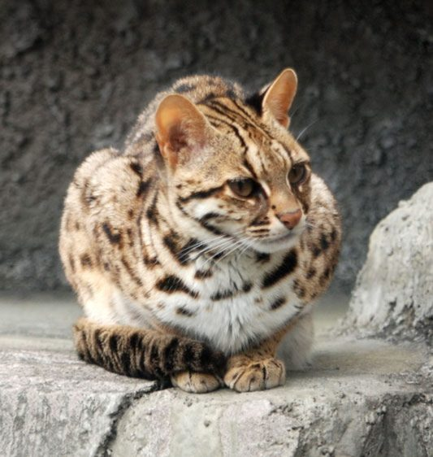
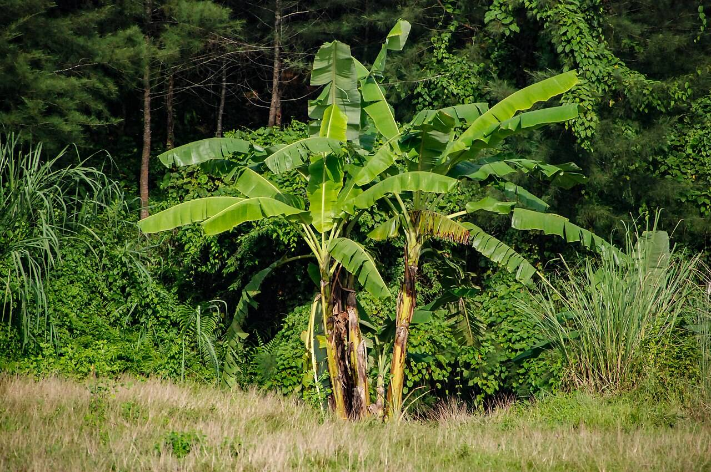

展廳一
土地的呼吸——集集山蕉與石虎的共生
夜晚的淺山，香蕉葉沙沙作響。田埂邊一閃而過的身影，可能就是石虎。牠和農友共用同一片土地，也一起面對農藥、道路與棲地破碎的考驗。
認識石虎

- 身分臺灣第一級瀕臨絕種保育類野生動物（2008 年公告）
- 體型體長約 55–65 公分、尾長約 27–30 公分、體重約 3–6 公斤
- 辨識特徵耳後黑底白斑、兩眼之間有兩條白色條紋
- 習性夜行性，主要吃鼠類，是農友抓老鼠的好夥伴
- 分布苗栗、臺中、南投淺山；南投以中寮、集集一帶為熱區
- 數量各研究推估多在 500 至 1,000 隻以內
石虎與集集：示意地圖
點一下地圖上的圓點看說明。為了保護石虎與農友，這裡只標示示意位置，不標真實的出沒點與農戶住址。
點選地圖上的圓點，這裡會出現說明。
示意圖，非實際比例。想換成真實地圖：用 Google 我的地圖建立點位後，把嵌入碼貼在這裡（座標參考素材包 map_points.csv）。
友善石虎農作：農友做了哪些事？
點一下卡片，看看每個做法對生態有什麼好處。
從 2014 到今天：友善農作的腳步
- 2014林務局（今林業及自然保育署）與特有生物研究保育中心推動「友善石虎農作」標章。
- 2019南投縣開始推動石虎生態服務給付，中寮率先試辦。
- 2020集集鎮加入，納入農地給付與社區巡守。
- 2025南投縣 38 戶取得友善石虎標章、9 戶取得安全蔬果認證，面積 86.56 公頃，作物包括稻米、香蕉、紅龍果。
- 2026參與農戶增加到 55 戶、99.70 公頃。

農友的聲音
請訪問一位集集的友善農友（或引用公開報導並註明出處），寫 100–150 字：他為什麼願意改變耕作方式？遇到什麼困難？附上一張自己拍的田間照片。